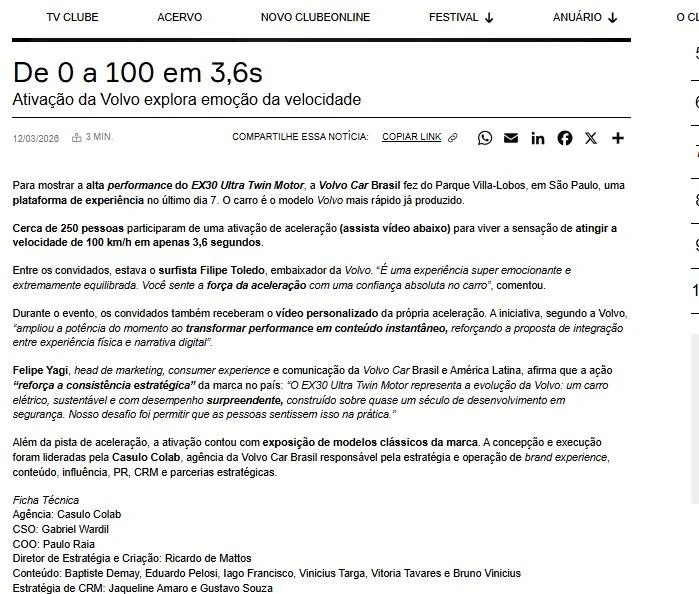
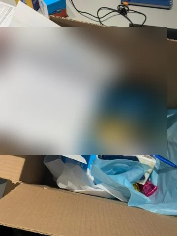
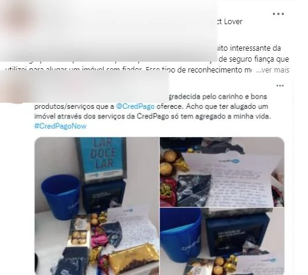
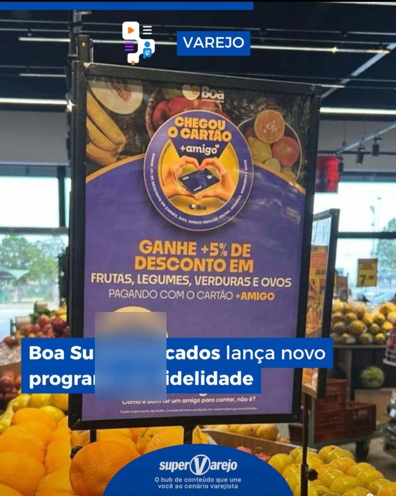
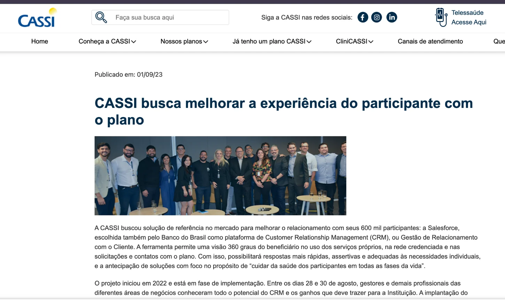
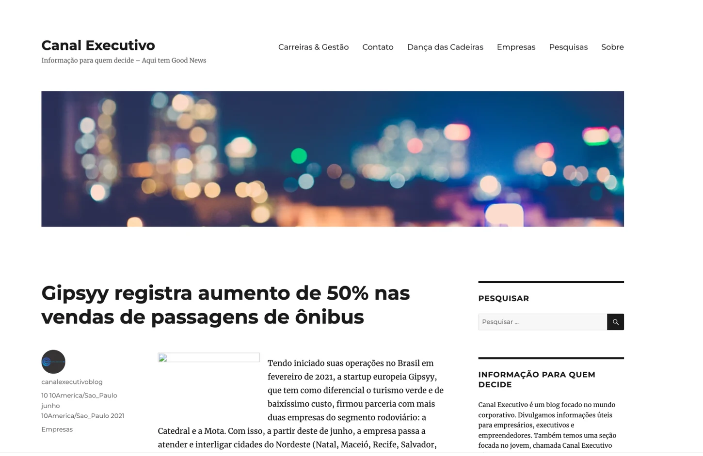

Comunidade · Carreira · Tecnologia
conexão crm.
Produto autoral / 01
Conexão CRM
Um ecossistema para conectar profissionais de CRM, CX e CS a oportunidades de carreira, conteúdos e pessoas, integrando comunidade e ferramentas digitais.
Sou Jaqueline Amaro. Conecto visão de negócio, experiência do cliente, dados e tecnologia para transformar problemas em soluções reais.
Minha atuação une estratégia de CRM, CX Analytics, desenvolvimento de equipes e construção de produtos digitais.
Tenho trajetória em operações e projetos de relacionamento com clientes, com experiência em varejo, mobilidade, saúde, fintechs e tecnologia. Trabalho de ponta a ponta: diagnóstico, estratégia, jornada, implementação e evolução.
Acredito em liderança colaborativa e em produtos que façam sentido para as pessoas. Gosto de traduzir complexidade em experiências claras, documentar decisões e validar resultados, sem perder a perspectiva de negócio.
Indicadores informados nos relatos públicos dos projetos, referentes aos respectivos períodos e escopos.
Dois produtos independentes que demonstram estratégia, desenho de experiência, conteúdo, operação, IA aplicada e melhoria contínua.
Um ecossistema para conectar profissionais de CRM, CX e CS a oportunidades de carreira, conteúdos e pessoas, integrando comunidade e ferramentas digitais.
Experiência de desenvolvimento profissional com PDI, trilhas, ferramentas de carreira, mentoria e apoio de tecnologia para transformar aprendizado em prática.
Concepção e evolução de uma plataforma que procura diminuir a fragmentação entre comunidade, visibilidade profissional e oportunidades.
Informações, vagas e conexões do ecossistema de CRM e CX estavam distribuídas em diferentes canais.
Proposta de valor, arquitetura da experiência, priorização, jornadas, comunicação, Growth e documentação funcional.
Diretório profissional, Radar de Vagas, filtros e recursos de match, com foco em uso intuitivo, acessibilidade e privacidade.
Estratégia e experiência de aprendizagem para apoiar a evolução de carreira de maneira mais estruturada e contínua.
Transformar conhecimento disperso em uma jornada clara de autoconhecimento, planejamento e ação.
Concepção, proposta de valor, onboarding, organização da jornada, conteúdo, comunicação e evolução do produto.
PDI, trilhas, microlearning, feedback, experiências gamificadas e ferramentas digitais de apoio.
Sobre o código: as demonstrações públicas dos produtos são independentes deste site. Seus repositórios de implementação não são vinculados aqui. Detalhes técnicos e decisões de arquitetura podem ser discutidos em entrevista, respeitando confidencialidade, segurança e permissões.
Dez histórias de projetos em CRM, CX, dados e inteligência artificial, integradas para uma leitura contínua. Cada case apresenta o desafio, minha atuação, resultados e, quando disponíveis, registros públicos ou materiais autorizados.
Agente de IA no funil comercial, segmentação RFV e jornada omnicanal
+35% na conversão digital
Unir experiências premium, dados de comportamento e acompanhamento comercial para transformar interesse e eventos em oportunidades qualificadas de venda.
Como gerente de CRM, liderei o desenho e a implantação de um agente de IA aplicado à jornada comercial. A solução organizava sinais de interesse por linha de veículo, apoiava a coleta pós-evento, sugeria ofertas, auxiliava no agendamento de test drives e disponibilizava pitches personalizados ao time de vendas. Estruturei segmentação RFV por comportamento e carline, otimizei fluxos digitais e WhatsApp, liderei uma equipe de seis pessoas em CRM e CX e participei da construção do roadmap em colaboração com a Volvo Cars Global.
Resultados informados pela autora: +4 p.p. em lealdade à marca; +3% em upgrades de categoria na troca de veículos; redução de churn sem percentual divulgado; +12 p.p. no indicador de LTV nos três primeiros meses; +35% na conversão de jornadas digitais. Os indicadores não constam da matéria jornalística vinculada, que documenta a ativação do EX30 e a participação da equipe de CRM.

Embaixadores, relacionamento e prova social (atualmente vinculada ao grupo Loft)
+20% receita incremental de CRM
Fortalecer a experiência e o relacionamento com parceiros em um mercado de alta concorrência.
Conduzi iniciativas de fidelização e embaixadores, acompanhadas por dashboards estratégicos para aprimorar a tomada de decisão.
Aumento de 20% na receita incremental de CRM, conforme relatado no case público; evolução do programa de relacionamento.


Lançamento de marca orientado por CRM
CRM construído do zero
Lançar uma marca e construir canais de relacionamento e uma base qualificada desde o início.
Estruturei estratégia de CRM, jornadas, segmentação, automações e acompanhamento do crescimento.
Criação da base de relacionamento e definição de uma operação de CRM para aquisição e engajamento.
Gestão estratégica e novos canais
Novos canais de relacionamento
Escalar o relacionamento com lojistas e parceiros em uma fintech em fase de crescimento.
Estruturei canais de aquisição e relacionamento, com comunicação segmentada e acompanhamento de indicadores.
Novos canais estruturados e fluxos de comunicação aprimorados para diferentes públicos.
Retenção e comunidade durante a pandemia
70% de renovação relatada
Manter o relacionamento e a recorrência B2B em um contexto de redução de orçamentos.
Implantei acompanhamento via HubSpot, pontos de contato estratégicos e uma comunidade de clientes como parte da jornada de valor.
Taxa de renovação relatada de 70% durante a pandemia e fortalecimento de práticas de acompanhamento de contas.
Clube +Amigo, programa de fidelidade do grupo Plurix
14–20% de reativação
Escalar fidelização e comunicação relevante em diferentes bandeiras de varejo e um grande número de lojas.
Atuei com RFV, segmentação e campanhas de ciclo de vida, utilizando Data Cloud e Marketing Cloud.
Reativação relatada de 14% a 20% em campanhas sazonais; participação do CRM na ROB de 3% em 2024.

Transformação de atendimento com Salesforce
R$ 350 mil em economia
Apoiar a adoção de uma nova plataforma de CRM em uma operação complexa, com melhoria da experiência dos participantes.
Conduzi frentes de implantação e adoção, treinamento de equipes, padronização de interações e acompanhamento dos indicadores de atendimento.
Economia relatada de R$ 350 mil em três meses; 73% de adoção em quatro meses e ganho de 25% na produtividade dos agentes.

CRM mobile e crescimento de receita
+35% em usuários ativos
Aumentar engajamento, retenção e eficiência comercial no aplicativo de uma operação de mobilidade.
Estruturei réguas de ativação, reengajamento e recuperação de carrinho, com segmentações por comportamento e canais digitais.
Aumento relatado de 35% no fluxo de usuários ativos no mobile e 15% na rentabilidade em rotas próprias.

Dashboard de jornada e onboarding
–30% no tempo de onboarding
Dar visibilidade à jornada de novos vendedores e às métricas de retenção e desempenho.
Desenhei um dashboard interativo para leitura de indicadores, etapas de onboarding e pontos de contato.
Redução relatada de 30% no tempo de onboarding e aumento de 25% na taxa de retenção de clientes.
Agentes de IA em uma carteira B2B, da descoberta à operação
99,3% de automação reportada
Escalar jornadas e serviços de agentes de IA em clientes B2B sem perder qualidade de atendimento, governança e capacidade de evolução.
Atuação em discovery, implantação e go-live de soluções de IA para uma carteira B2B, com liderança multidisciplinar de CX, CS, suporte e implementação. Estruturei onboarding, capacitação, padronização de processos, monitoramento com Langfuse e integrações de alto nível com CRM, canais de mensagens e sistemas empresariais. O número de pessoas lideradas foi omitido devido à divergência entre versões do currículo.
Resultados operacionais informados para agosto de 2026: 3.478 conversas com agentes; taxa de resposta de 27,5% em campanhas outbound; 99,3% de automação reportada; redução de 20% dos tickets de suporte após padronização e capacitação; 35% menos consumo de tokens após otimizações. Os indicadores são relatos profissionais e não foram auditados independentemente.
Os resultados e tecnologias acima foram sintetizados dos cases profissionais já divulgados publicamente. As descrições não incluem dados pessoais, configurações internas ou código-fonte.
Documentar hipóteses e decisões faz parte do meu trabalho. É assim que conecto estratégia, experiência e execução.
Problema, contexto, públicos e oportunidades.
Valor, hipóteses, escopo e critérios de sucesso.
Jornadas, informação, fluxos e comunicação.
Implementação, QA, acessibilidade e validações.
Feedback, indicadores e aprendizados contínuos.
Estou aberta a conversas sobre CRM, CX, produtos digitais, liderança, Growth e IA aplicada. Posso aprofundar os estudos de caso e o processo de construção durante uma entrevista.